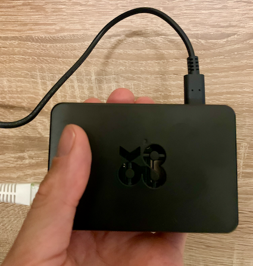
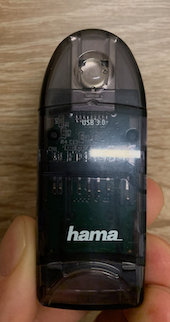

Matériel
Voici la liste du matériel nécessaire à la réalisation de ce montage.
Boîtier domotique
Nous suivons ici la recommendation de Home Assistant et nous nous équipons d’un Rasberry 4. Il est important qu’il soit alimenté correctement, le plus simple est d’acheter un kit qui comprend un boîtier et le chargeur. Il faut aussi idéalement le relier au réseau à l’aide un cable RJ45, à privilégier sur le Wifi pour avoir une connection la plus stable possible. Dans ce guide, nous installons le système d’exploitation Home Assistant sur le Rasberry et celui-ci est donc dédié entièrement à la gestion domotique. A moins que le kit ne comprenne déjà une carte MicroSD de capacité suffisante, nous rajoutons l’achat d’une carte de 32GB. Il faut aussi un moyen d’écrire sur la carte depuis votre ordinateur, s’il n’en est pas équippé un lecteur de carte USB externe fait parfaitement l’affaire.

Boîtier Rasperry Pi 4

Lecteur de carte MicroSD
Ma configuration:
- OKDO Rasberry Pi 4 Basic kit (80CHF chez Microspot)
- SANDISK MicroSD MicroSDHC Ultra 32GB (12.50CHF)
- HAMA Lecteur de cartes USB 3.0 type A (10CHF)
Compteurs Wifi
Pour les compteurs d’électricité nous avons choisi des compteurs Wifi Shelly. Nous avons besoin de deux unités:
- Compteur principal tri-phasé Shelly3EM (disponible en vente directe ou via online shops, 110CHF environ)
- Compteur annexe pour la production solaire ShellyEM (60CHF environ). Différents packs existent, le minimum est le pack de base avec une pince à induction de 50A, suffisant pour mesurer la production solaire avec un onduleur mono-phasé. Si vous souhaitez mesurer le courant effectivement envoyé dans la prise via le disjoncteur correspondant (chez moi c’est le disjoncteur du garage), alors vous pouvez prendre un pack avec deux pinces.
- Cables électriques, 2 mètres suffisent, prendre du 2.5 mm de section (16A) de chaque couleur plus le neutre (brun, noir, gris, bleu)
Ce montage utilise des compteurs électriques qui doivent être installés sur le panneau central. Il est recommandé de faire appel au spécialiste pour l’installation de ceux-ci. Le guide décline toute responsabilité en cas d’erreur d’installation.
Si l’installation de compteurs n’est pas envisageable, ou vous avez déjà une installation existante, il est possible de récupérer les données solaires au moyen d’une intégration Home Assistant. Par exemple, les systèmes SolarEdge permettent de récupérer la production solaire (et la consommation, si votre installation est équipée de ce module). La fréquence de mise à jour des valeurs est toutefois limitée et donc la précision sera moindre que celle du compteur connecté. Il est également possible de se baser uniquement sur la valeur de production solaire et d’estimer votre consommation domestique moyenne, mais bien entendu la précision de l’optimisation en pâtira.
Remarquez que cette liste ne constitue qu’une recommendation, il est possible d’utiliser d’autres marques tant que l’intégration avec Home Assistant existe et fonctionne.